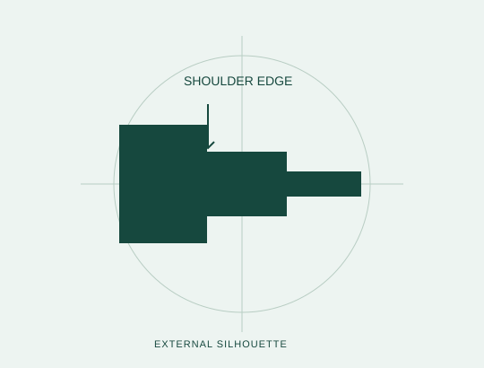
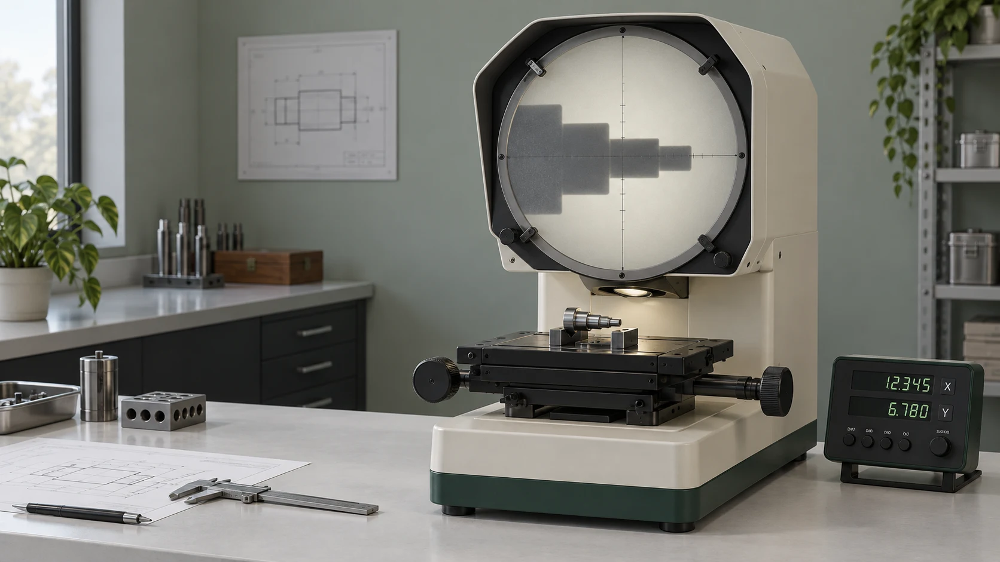
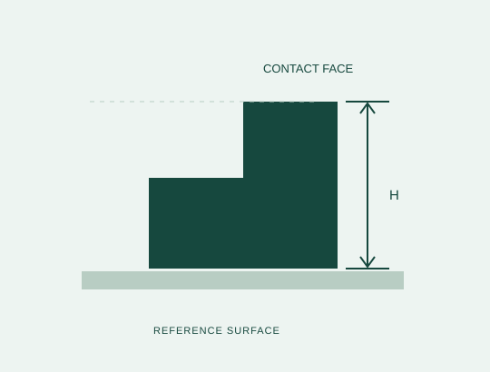
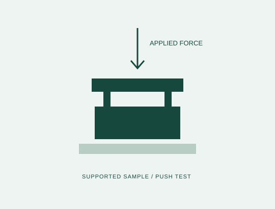

Turned valve pin
Can the shoulder and external edge be seen in the same setup?
Start with the external silhouette. Part orientation and edge visibility matter before you choose a lens.
EXPLOREO300Optical comparator
Explore O300 Bench instruments / Brno, Czechia
Optical, height and force instruments.
Chosen around the question your sample needs to answer.

O-SERIESClarity at
the edge.Explore O300
Start with a question
Different features ask for different methods. Choose one to explore a sensible first instrument.

Turned valve pin
Start with the external silhouette. Part orientation and edge visibility matter before you choose a lens.

Milled spacer block
Start with the reference surface. Contact access and sample stability matter before you choose the gauge.

Snap-fit cap
Start with the loading direction. A stand, force gauge and fixture need to work as one setup.
The instrument collection
Application before specification
A sample has a surface, a shape and a way of being held. Your team has a workflow. We bring these together before proposing an instrument, so the demonstration answers a useful question.
Identify the dimension or force you actually need to understand.
Review the method with representative samples and workholding.
Agree how the operator captures the result and what support follows.
A demonstration with a purpose
Tell us which feature matters. We will show you what to prepare for an application discussion.
Prepare your demo brief Local planning demo. No appointment is booked.